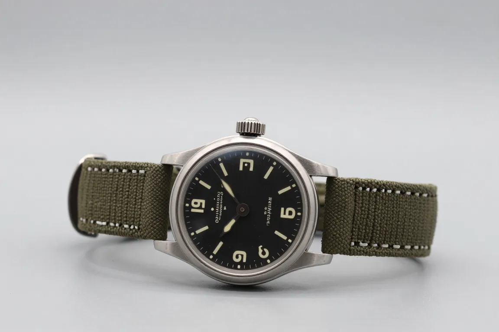

мода · 1931–now · также: Часы Flieger, Наблюдательские часы, Военные полевые часы
Читаемые инструментальные часы для кабины и поля. Стальной корпус, матовый чёрный циферблат с крупными белыми светящимися цифрами, большая головка для перчаток и длинный ремешок. Тип задали часы Hour Angle 1931 года и немецкие наблюдательские часы 1930-х.

Главная идея
Инструментальные часы читаются с одного взгляда, при плохом свете и в перчатке. Каждая часть служит читаемости и больше ничему.
Принципы дизайна
Печатайте белые арабские цифры на матовом чёрном циферблате и отмечайте 12 треугольником и двумя точками.
Режьте стрелки смелыми палочками или мечами, залитыми люминесцентной краской, и доводите минутную стрелку до дорожки.
Делайте головку шириной 7–9 мм, в форме луковицы или рифлёного колеса, чтобы её мог завести рука в перчатке.
Делайте полевые часы шириной 34–38 мм, а часы лётчика 40–55 мм, надеваемые поверх лётного рукава.
Ставьте вокруг механизма клетку из мягкого железа, чтобы магнитные поля авиаприборов не сдвигали баланс.
Держите циферблат матовым, чтобы в кабине блики оставались низкими.
Режьте ремешок длиной 200–250 мм, чтобы он шёл поверх лётной куртки, и клепайте его к ушкам.
Оставляйте циферблат без орнамента, логотипов и лишних шкал.
Антипаттерны
Золотой или эмалевый циферблат
Мелкие цифры и тонкие стрелки, не светящиеся
Зеркально полированный корпус, вспыхивающий на солнце
Циферблат, забитый малыми циферблатами и окошками
Тонкий нарядный корпус, который можно согнуть ударом
Короткий ремешок, подходящий только голому запястью